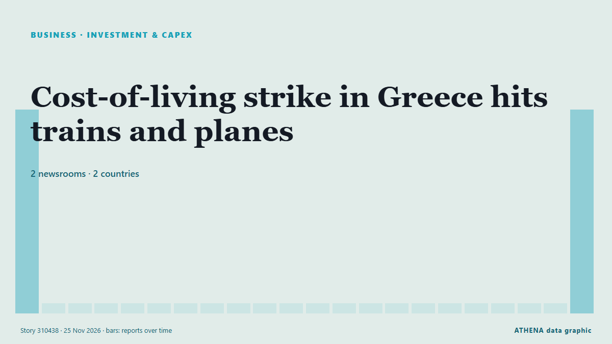

Entreprises et investissement
SponsoriséPrésenté par  Cybernetics and Artificial Intelligence Lab Welcome to the Cybernetics and Artificial Intelligence Laboratory, established at the Department of Business Administration of the National and Kapodistrian University of Athens. The lab is headed by Professor Dimitrios Thomakos. The lab aims to do research that can be published in top venues. Our research uses tools and methods of Artificial Intelligence, and lies in the following areas: - Forecasting - Decision making - Cyber security - Finance We are always looking forward to collaborating with exceptional students!
Cybernetics and Artificial Intelligence Lab Welcome to the Cybernetics and Artificial Intelligence Laboratory, established at the Department of Business Administration of the National and Kapodistrian University of Athens. The lab is headed by Professor Dimitrios Thomakos. The lab aims to do research that can be published in top venues. Our research uses tools and methods of Artificial Intelligence, and lies in the following areas: - Forecasting - Decision making - Cyber security - Finance We are always looking forward to collaborating with exceptional students!
Les titres sont affichés en anglais, tels que publiés.

InvestissementsCost-of-living strike in Greece hits trains and planes
Greece's R&D spending reached €4.06 billion in 2025, up 12%, as the country expands investment in artificial intelligence and innovation. de Greek City Times
| 13 nov. | 63 |
|---|---|
| 14 nov. | 38 |
| 15 nov. | 36 |
| 16 nov. | 99 |
| 17 nov. | 88 |
| 18 nov. | 88 |
| 19 nov. | 86 |
| 20 nov. | 63 |
| 21 nov. | 40 |
| 22 nov. | 39 |
| 23 nov. | 79 |
| 24 nov. | 81 |
| 25 nov. | 37 |
| 26 nov. | 0 |
Eurostar services between London and Paris cancelled after staff go on surprise strike
Eurostar is advising travelers to postpone their journeys. de The Independent
Best Black Friday 2026 3D Printer deals live
Here are some of the best 3D printer deals we've found for you this Black Friday. de Tom's Hardware
Amazon to sell cars online in UK from next year
It will be the first time the Silicon Valley firm has expanded its Amazon Autos operation beyond the US. de Evening Standard (London)
‘Minor’ turn in Tiger Shroff attack case, 17-year-old sent to Juvenile Justice Board
Gulftainer acquires Bangkok terminal, expands China-Gulf links
The acquisition is part of the UAE-based port operator's long-term strategy to develop trade corridors linking Asia, the Indian subcontinent, Africa and the Middle East. de The Journal of Commerce (JOC)
FSSAI on pan-India enforcement drive on packaged drinking water, lab test to take 1-2 months: CEO Rajit Punhani
New Delhi: FSSAI CEO Rajit Punhani on Wednesday said the food regulator is collecting samples of packaged drinking water from across the country and lab testing will be complete in around two months. de Deccan Herald
Sanofi to buy Insmed for $41B in industry's largest acquisition in years
Sanofi has made it official: The French pharma plans to acquire Insmed for $41 billion in cash, marking the first megadeal in the biopharma industry since Pfizer's $43 billion takeover of ... de Endpoints News
S-Oil completes W9tr Shaheen petrochemical project
S-Oil marked the completion of its Shaheen petrochemical complex in Ulsan on Wednesday, capping South Korea’s largest-ever petrochemical investment as the refiner moves to expand its chemicals… de Korea Herald
Asia Cup Rising Stars 2026: India A’s route to the semifinal against Sri Lanka A
India A faces Sri Lanka A in the Rising Stars Asia Cup 2026 semifinal on November 26. de Sportstar
Economic Watch: China's emerging sectors unleash fresh employment opportunities
Pakistan and China discuss new opportunities in energy and mining sectors. de ARY News
Possible Tesla merger could aid SpaceX’s S&P 500 entry, J.P. Morgan says
A potential merger of SpaceX (SPCX.O), opens new tab and Tesla could make the rocket company eligible for the S&P 500 and trigger passive buying of roughly 10% of its free-float shares, J.P. de The San Juan Daily Star
Qatar and Canada sign deal on Afghanistan, investment at first Strategic Dialogue
Doha will help protect Canadian interests in Afghanistan, one of three agreements signed in Ottawa as the two countries launch a new strategic partnership. de Doha News
Maritime governance task force launches accountability playbook
Earlier this month, the maritime governance task force, formed at the Annual Summit 2025, published a new accountability playbook outlining. de Cyprus Shipping News
Seatrium to cut Singapore workforce as it consolidates shipyards
Singapore-based marine engineering group Seatrium has announced plans to reduce approximately 2% of its Singapore workforce as part of a restructuring programme aimed at improving operational… de Container News
CrowdStrike to acquire Zscaler for $44 billion
The cybersecurity giant said that the deal to buy Zscaler, which provides zero-trust products to large enterprises, will better equip their customers to use AI agents. de TechCrunch
Trump administration sued over removal of slavery exhibit in Philadelphia
Civil rights advocates say President Donald Trump's orders reverse decades of social progress. de The Straits Times
German President Steinmeier to open major German-African Business Summit in Accra today
German President Frank-Walter Steinmeier is expected to officially open the sixth German-African Business Summit (GABS 2026) today, alongside President John Dramani Mahama. de MyJoyOnline
How AI can open South Africa’s tourism and hospitality industry to new markets
AI adoption is increasing in other business sectors. de IOL
Google will make AI agents use new gateways to reach Gmail and Drive
Google has made its Workspace MCP servers and CLI generally available and says AI agents must use them instead of existing REST APIs from February 1, 2027. de The Next Web
Raskin probes government benefits to companies affiliated with Donald Trump Jr. firm
A top House Democrat is broadening his investigation into Donald Trump Jr.’s venture capital fund 1789 Capital by demanding records from four companies that secured an investment before benefiting… de Fast Company
Start-up milestones for Indian plants
As Kaiga unit 1 restarts after a record-breaking refurbishment outage, India's nuclear regulator has given Nuclear Power Corporation of India permission for the First Approach to Criticality for unit… de World Nuclear News
Amazon Acquires Tech and Staff From AI Startup Decart
Amazon says it will acquire the technology behind artificial intelligence (AI) startup Decart. de PYMNTS
Colombian Lawmakers’ Visit to Taiwan Sparks Diplomatic Row with China
A visit to Taiwan by a group of Colombian lawmakers sparked a diplomatic dispute between Bogotá and Beijing after the Chinese government voiced its opposition to the trip and demanded that President… de Colombia One
ExxonMobil and partners approve $4bn investment in Angola’s Block 15
ExxonMobil and its partners in Angola's Block 15 have agreed on a final investment decision (FID) valued at approximately $4bn to redevelop the Kizomba A and Kizomba B fields, as well as to develop… de Offshore Technology
Costa Concordia Captain Released from Prison After Nine Years
Francesco Schettino, the former captain of the Costa Concordia cruise ship that capsized off Italy in 2012, killing 32 people, has been released from prison after more than nine years... de gCaptain
Anne O'Connor to 'vigorously' challenge her 'profoundly flawed' removal as HSE CEO
Ms O'Connor said she is 'deeply surprised and disappointed' by the 'abrupt' manner of the decision. de Irish Examiner
Twenty-one states sue Trump administration over housing rule that could evict U.S. citizen children
Twenty states and the have sued the U.S. de The Independent
Google to shut down Nest app, Google Assistant on smart home devices in 2027
Google is announcing some significant changes to its smart home software. de The Verge
Russia and Iran Exploring Expanded Cooperation in Mining, Industry and Technology
Addis Ababa, November 24, 2026 (FMC) – Russia and Iran are seeking to expand industrial and trade cooperation, with mining emerging as one of the promising areas of partnership alongside… de Fana Broadcasting Corporate
18,135 Hotels Join European Lawsuit Against Booking.com
The claim, which includes around 1,000 Greek hotels, seeks compensation for alleged financial losses caused by price-parity clauses between 2004 and 2024. de to vima
Eni's Vår Energi to acquire ConocoPhillips' assets in Norway and UK for $2.5 bn
(ANSA) - ROME, 23 NOV - The Norwegian oil and gas producer Vår Energi—in which Eni is the majority shareholder—is set to acquire ConocoPhillips' upstream assets in Norway, along with related… de ANSA English
De Lima seeks state of calamity declaration over El Niño
A resolution has been filed at the House of Representatives urging President Ferdinand “Bongbong” Marcos Jr. to declare a state of calamity in municipalities… de Daily Tribune
Tech giants to face billion-dollar fines for breaching Labor’s digital duty of care laws
The fines – for allowing harmful content to fester on social media platforms – are exponentially greater than the original maximum penalties set at $109.2 million per breach. de Sydney Morning Herald
Bureau Veritas buys Topo Solutions to strengthen digital supply-chain oversight
Bureau Veritas has acquired Hong Kong-based Topo Solutions, adding an artificial intelligence (AI)-enabled supply-chain management platform to its services for consumer goods companies and retailers. de Maritime Gateway